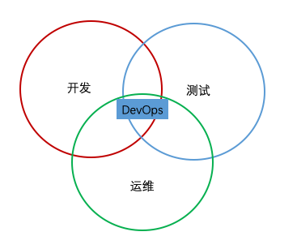
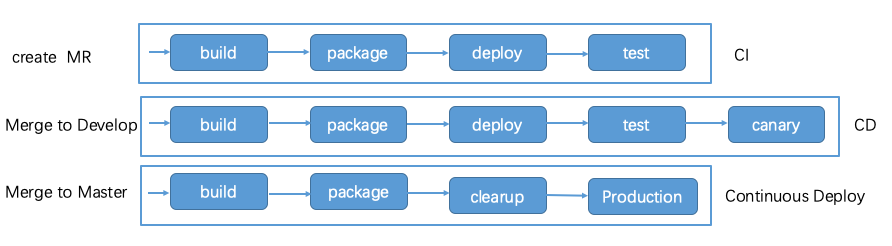

- 00 开篇词 微服务，从放弃到入门.md.html
- 01 到底什么是微服务？.md.html
- 02 从单体应用走向服务化.md.html
- 03 初探微服务架构.md.html
- 04 如何发布和引用服务？.md.html
- 05 如何注册和发现服务？.md.html
- 06 如何实现RPC远程服务调用？.md.html
- 07 如何监控微服务调用？.md.html
- 08 如何追踪微服务调用？.md.html
- 09 微服务治理的手段有哪些？.md.html
- 10 Dubbo框架里的微服务组件.md.html
- 11 服务发布和引用的实践.md.html
- 12 如何将注册中心落地？.md.html
- 13 开源服务注册中心如何选型？.md.html
- 14 开源RPC框架如何选型？.md.html
- 15 如何搭建一个可靠的监控系统？.md.html
- 16 如何搭建一套适合你的服务追踪系统？.md.html
- 17 如何识别服务节点是否存活？.md.html
- 18 如何使用负载均衡算法？.md.html
- 19 如何使用服务路由？.md.html
- 20 服务端出现故障时该如何应对？.md.html
- 21 服务调用失败时有哪些处理手段？.md.html
- 22 如何管理服务配置？.md.html
- 23 如何搭建微服务治理平台？.md.html
- 24 微服务架构该如何落地？.md.html
- 25 微服务为什么要容器化？.md.html
- 26 微服务容器化运维：镜像仓库和资源调度.md.html
- 27 微服务容器化运维：容器调度和服务编排.md.html
- 28 微服务容器化运维：微博容器运维平台DCP.md.html
- 29 微服务如何实现DevOps？.md.html
- 30 如何做好微服务容量规划？.md.html
- 31 微服务多机房部署实践.md.html
- 32 微服务混合云部署实践.md.html
- 33 下一代微服务架构Service Mesh.md.html
- 34 Istio：Service Mesh的代表产品.md.html
- 35 微博Service Mesh实践之路（上）.md.html
- 36 微博Service Mesh实践之路（下）.md.html
- 微博技术解密（上） 微博信息流是如何实现的？.md.html
- 微博技术解密（下）微博存储的那些事儿.md.html
- 结束语 微服务，从入门到精通.md.html
- 阿忠伯的特别放送 答疑解惑01.md.html
- 阿忠伯的特别放送 答疑解惑02.md.html
- 捐赠
29 微服务如何实现DevOps？
把一个大的单体应用拆分成多个微服务之后，每个服务都可以独立进行开发、测试和运维。但当拆分的微服务足够多时，却又仿佛陷入一个新的泥沼，无论是业务代码的开发还是测试和运维，工作量都比之前提升了很多。
采单体应用架构时，一个业务需求只需要修改单体应用的代码，然后针对这个单体应用进行测试，测试通过后再把单体应用的代码发布到线上即可。而拆分为微服务之后，一个大的系统被拆分为多个小的系统，一个业务需求可能要同时修改多个微服务的代码，这样的话多个微服务都需要进行测试，测试通过了都需要把代码发布到线上，显然工作量成倍增加。这时候就迫切需要一种新的开发、测试和运维模式来解决这个问题，这就是今天我要给你讲的微服务与DevOps。
什么是DevOps？
在介绍DevOps之前，我先来带你回顾一下传统的业务上线流程：开发人员开发完业务代码后，把自测通过的代码打包交给测试人员，然后测试人员把代码部署在测试环境中进行测试，如果测试不通过，就反馈bug给开发人员进行修复；如果通过，开发就把测试通过的代码交给运维人员打包，然后运维人员再发布到线上环境中去。可见在传统的开发模式下，开发人员、测试人员和运维人员的职责划分十分明确，他们往往分属于不同的职能部门，一次业务上线流程需要三者之间进行多次沟通，整个周期基本上是以天为单位。你肯定会想假如能够把开发、测试和发布流程串联起来，就像生产流水线上那样，每个步骤完成后，就自动执行下一个步骤，无须过多的人为干预，业务的迭代效率不就能提升很多吗。
没错，DevOps的思想正是如此。在我看来，DevOps是一种新型的业务研发流程，业务的开发人员不仅需要负责业务代码的开发，还需要负责业务的测试以及上线发布等全生命周期，真正做到掌控服务全流程。DevOps就是下图中心的部分，集开发、测试和运维三者角色于一体。

而要实现DevOps，就必须开发完成代码开发后，能自动进行测试，测试通过后，能自动发布到线上。对应的这两个过程就是CI和CD，具体来讲就是：
CI（Continuous Integration），持续集成。开发完成代码开发后，能自动地进行代码检查、单元测试、打包部署到测试环境，进行集成测试，跑自动化测试用例。
CD（Continuous Deploy），持续部署。代码测试通过后，能自动部署到类生产环境中进行集成测试，测试通过后再进行小流量的灰度验证，验证通过后代码就达到线上发布的要求了，就可以把代码自动部署到线上。
其中CD还有另外一个解释就是持续交付（Continuous Delivery），它与持续部署不同的是，持续交付只需要做到代码达到线上发布要求的阶段就可以了，接下来的代码部署到线上既可以选择手动部署也可以选择自动部署。实际服务发布时，代码能否自动部署到线上本身并不是难点，关键在于是否需要人为判断整个发布过程是否正常，毕竟有些异常只有在真正的线上发布过程中才能被发现，人为介入相对来说要保险一些，所以只做到持续交付也可以算是实现了DevOps。
DevOps的关键是如何实现代码开发自测通过，自动部署到测试环境，验证通过后再自动部署到生产环境，小流量验证后再自动发布到线上去。在传统的采用物理机部署服务的时代，这个流程的很难自动化执行的最大原因就是代码环境的可移植性差，这是因为开发自己的环境，跟测试环境以及生产环境的软件配置往往存在很大差异，经常会出现开发在自己的环境中运行通过的代码，部署到测试环境就运行不了的问题。而容器化正好解决了代码环境的可移植性的问题，使得DevOps取得了突飞猛进的发展，并成为业界推崇的开发模式。那么具体该如何实现DevOps呢？下面我就以微博的业务实践为例，来给你详细讲解。
微博的DevOps实践
目前业界比较通用的实现DevOps的方案主要有两种，一种是使用Jenkins，一种是使用GitLab。微博就主要使用的是GitLab来实现DevOps，下面我就从微博一个服务的开发、测试到上线的具体流程，看看是如何实现DevOps的。

从上面图中你可以看到，一个服务的发布流程主要包含了三个步骤。
1.持续集成，这个步骤的主要作用是确保每一次代码的Merge Request都测试通过，可随时合并到代码的Develop分支，主要包括四个阶段：build阶段（开发分支代码的编译与单元测试）、package阶段（开发分支代码打包成Docker镜像）、deploy阶段（开发分支代码部署到测试环境）、test阶段（开发分支代码集成测试）。
2.持续交付，这个步骤的主要作用是确保所有代码合并Merge Request到Develop分支后，Develop分支的代码能够在生产环境中测试通过，并进行小流量灰度验证，可随时交付到线上。主要包括五个阶段：build阶段（Develop分支的代码编译与单元测试）、package阶段（Develop分支的代码打包成Docker镜像）、deploy阶段（Develop分支的代码部署到测试环境）、test阶段（Develop分支的代码集成测试）、canary阶段（Develop分支的代码的小流量灰度验证）。
3.持续部署，这个步骤的主要作用是合并Develop分支到Master主干，并打包成Docker镜像，可随时发布到线上。主要包括四个阶段：build阶段（Master主干的代码编译与单元测试）、package阶段（Master主干的代码打包成Docker镜像）、clear阶段（Master主干的代码Merge回Develop分支）、production阶段（Master主干的代码发布到线上）。
那么，上面这些流程是如何实现自动化的呢？在GitLab中可以通过一个叫“.gitlab-ci.yml”的文件来定义自动化流程都包含哪些阶段，以及每个阶段所具体执行的脚本，这样的话在提交代码Merge Request后会自动触发gitlab-ci.yml文件中定义的各个流程按顺序执行。
实现DevOps的关键点
上面我讲了具体业务中如何使用GitLab来实现DevOps，在具体实施时，每个阶段都有关键问题，只有解决了这些关键问题，才能真正实现DevOps。
1.持续集成阶段
持续集成阶段的主要目的是保证每一次开发的代码都没有问题，即使合并到主干也能正常工作，这里主要依靠三部分的作用。
代码检查。通过代码检查可以发现代码潜在的一些bug，比如Java对象有可能是null空指针等，实际执行时可以在持续集成阶段集成类似Sonarqube之类的工具来实现代码检查。
单元测试。单元测试是保证代码运行质量的第二个关卡。单元测试是针对每个具体代码模块的，单元测试的覆盖度越高，各个代码模块出错的概率就越小。不过实际业务开发过程中，为了追求开发速度，许多开发者并不在意单元测试的覆盖度，而是把大部分测试工作都留在了集成测试阶段，这样可能会造成集成测试阶段返工的次数太多，需要多次修复bug才能通过集成测试。尤其对于业务复杂度比较高的服务来说，在单元测试阶段多花费一些功夫，其实从整个代码开发周期角度来看，收益还是要远大于付出的。
集成测试。集成测试就是将各个代码的修改集成到一起，统一部署在测试环境中进行测试。为了实现整个流程的自动化，集成自测阶段主要的任务就是跑每个服务的自动化测试用例，所以自动化测试用例覆盖的越全，集成测试的可靠性就越高。这里就要求开发和测试能及时沟通，在新的业务需求确定时，就开始编写测试用例，这样在跑自动化测试用例时，就不需要测试的介入了，省去了沟通成本。当然，业务开发人员也可以自己编写测试用例，这样的话就不需要专职的业务测试人员了。
除此之外，还有一个值得关注的问题，就是集成测试阶段业务代码部署的测试机器从何而来。在单体应用的时候，一般是开发把代码打包交给测试，测试人员再分配给自己的测试机中部署业务，然后进行集成测试。但是现在问题来了，由于拆分成了微服务，需要测试的服务变多了，如果同时有多个需求在测试，测试人员的测试机可能就不够用了，而出于成本考虑，一般公司都不会花费采购大量的测试机器。一个好的办法就是通过Kubernetes之类的容器平台对测试集群进行管理，当有业务代码正在执行集成测试时，就从测试集群中创建一个容器部署服务，完成测试后，再销毁容器，及时进行资源回收。这样测试机器不需要分配给某个具体的个人，实现按需使用，提高了测试集群的资源使用率。
2.持续交付阶段
持续交付阶段的主要目的是保证最新的业务代码，能够在类生产环境中可能够正常运行，一般做法都是从线上生成环境中摘掉两个节点，然后在这两个节点上部署最新的业务代码，再进行集成测试，集成测试通过后再引入线上流量，来观察服务是否正常。通常需要解决两个问题：
如何从线上生产环境中摘除两个节点。这就需要接入线上的容器管理平台，比如微博的容器管理平台DCP就提供了类似下面的API，能够从线上生产环境中摘除某个节点，然后部署最新的业务代码。
curl -s http://raptor.api.weibo.com/extension/v1/preview/run/ -d action=503&ip=11.75.21.155&service_pool=openapi_friendship-yf-docker&user=weibo_rd_user
如何观察服务是否正常。由于这两个节点上运行的代码是最新的代码，在引入线上流量后可能会出现内存泄露等在集成测试阶段无法发现的问题，所以这个阶段这两个节点上运行最新代码后的状态必须与线上其他节点一致。实际观察时，主要有两个手段，一个是观察节点本身的状态，如CPU、内存、I/O、网卡等，一个是观察业务运行产生的warn、error的日志量的大小，尤其是error日志量有异常时，往往就说明最新的代码可能存在异常，需要处理后才能发布到线上。
3.持续部署阶段
持续部署阶段的主要目的把在类生产环境下运行通过的代码自动的发布到线上所有节点中去，这里的关键点就在于实际的线上发布阶段并不是想象中的那么直接。以微博API的业务为例，同样的服务也分为核心池和非核心池，核心池提供给移动端和PC调用，非核心池提供给其他内部业务调用，并且还按照机房分为不同的服务池，比如永丰机房服务池和土城机房服务池。实际发布的时候，考虑到线上服务的稳定性，并不是说按照一定的步长，自动把所有服务池都发布了，而是先发布非核心池以及土城机房的核心池，然后验证观察一段时间线上服务一切正常后，再继续发布永丰机房的核心池，以防止某些问题在服务发布的过程中才暴露出来，但又不至于影响线上所有的服务节点。所以这个阶段，持续部署一般并不要求那么完美，许多公司在这个阶段都采用了手动发布的方式以控制风险，或者只做到持续交付阶段，对于持续部署并不要求自动化。
总结
今天我给你介绍了DevOps对于微服务的意义，它通过将开发、测试和运维流程自动化，以减轻微服务拆分后带来的测试和运维复杂度的提升，同时还提高了业务研发的效率。为了实现DevOps，需要实现持续集成、持续交付以及持续部署，可以采用Jenkins或者GitLab这些开源DevOps工具来搭建你自己的CI/CD流程，关键点在于如何把已有的自动化测试用例，以及现有容器管理平台集成到CI/CD流程当中去，以完成自动化的CI/CD流水线处理。
实际上DevOps你可以理解为一种新型的业务研发流程，也可以理解为一种新的技术思维，它摒弃了传统的开发、测试和运维严格区分的观念，把三者的角色融为一体，让服务的开发者负责从开发、测试到发布的整个生命周期，真正的承担起服务负责人的角色。更广义的DevOps除了包括CI/CD流程的自动化处理，还包括智能监控决策、在线自动扩缩容等，甚至还引入了人工智能技术走向另外一个新方向AIOps，关于自动扩容的内容咱们下期再聊。
思考题
在DevOps的持续集成阶段，有两个测试，一个是单元测试，一个集成测试，你觉得它们的作用有何区别？是不是做好了集成测试就不需要单元测试了？
欢迎你在留言区写下自己的思考，与我一起讨论。
© 2019 - 2023 Liangliang Lee. Powered by gin and hexo-theme-book.